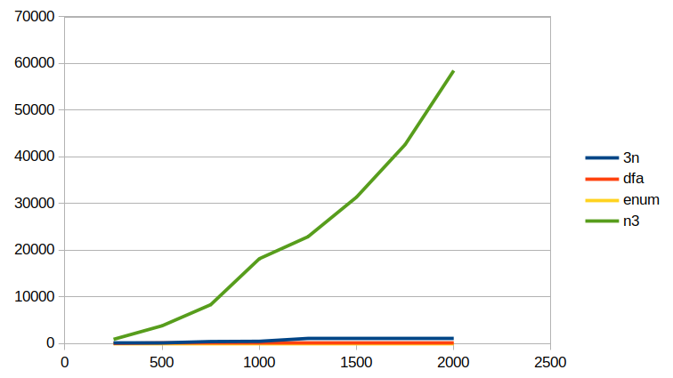
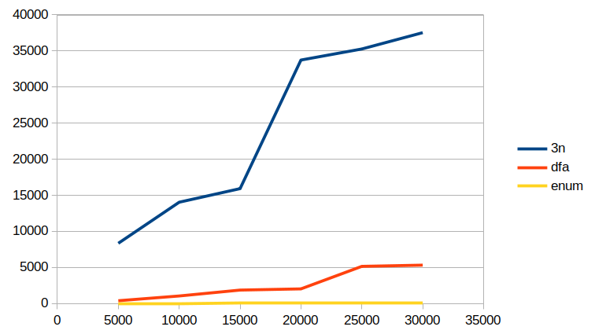
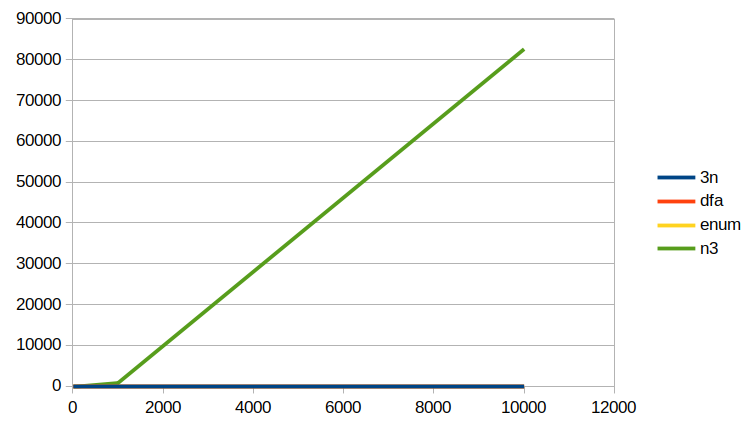
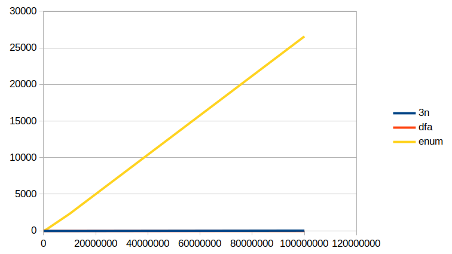

5 Ready, set, go!

n |
| 3n |
| dfa |
| enum |
| n3 |
250 |
| 76 |
| 8 |
| 0 |
| 889 |
500 |
| 168 |
| 112 |
| 0 |
| 3790 |
750 |
| 410 |
| 59 |
| 0 |
| 8309 |
1000 |
| 468 |
| 54 |
| 1 |
| 18165 |
1250 |
| 1033 |
| 68 |
| 1 |
| 22868 |
1500 |
| 1042 |
| 123 |
| 1 |
| 31357 |
1750 |
| 1036 |
| 136 |
| 3 |
| 42626 |
2000 |
| 1153 |
| 130 |
| 3 |
| 58484 |
3n is doing horribly. What takes enum a handful of miliseconds takes nearly a minute for 3n. I’ll have to stop measuring 3n for higher values if I want to see real differences between the other 3 implementations. One easy takeaway is that if you’re comfortable doing a divisibility against a constant value by using the existential approach with *o, make sure the constant is the first value, not the second! It makes a huge difference.
Continuing on without 3n for higher values of n.

n |
| 3n |
| dfa |
| enum |
5000 |
| 8342 |
| 383 |
| 8 |
10000 |
| 14033 |
| 1040 |
| 20 |
15000 |
| 15919 |
| 1858 |
| 27 |
20000 |
| 33743 |
| 2023 |
| 38 |
25000 |
| 35274 |
| 5149 |
| 58 |
30000 |
| 37538 |
| 5314 |
| 85 |
So it looks like enum is the best choice, but that’s only for generating values from a fresh variable. What if you want to use the relation to test if an already-fully-ground value is divisible by 3?
Here is the code template for the next drag race. Here we just want to find one answer, (.0), to indicate that the number x, (some variation of 999...) is indeed a multiple of 3.
(time (run 1 q (multiple-of-3o-enum (build-num x))))

x |
| 3n |
| dfa |
| enum |
| n3 |
9 |
| 0 |
| 0 |
| 0 |
| 1 |
99 |
| 0 |
| 0 |
| 0 |
| 7 |
999 |
| 1 |
| 0 |
| 0 |
| 775 |
9999 |
| 2 |
| 0 |
| 1 |
| 82604 |
n3 is doing even worse now at recognizing than it was at generating. Continuing without n3:

x |
| 3n |
| dfa |
| enum |
99999 |
| 4 |
| 0 |
| 18 |
999999 |
| 10 |
| 0 |
| 163 |
9999999 |
| 14 |
| 0 |
| 2329 |
99999999 |
| 23 |
| 0 |
| 26567 |
But now at higher values of x, enum starts to do badly! That is becasue it fully enumerates every multiple of 3 in order, and there are many, many multiples of 3 that come before 99999999. dfa remains speedy because it actually explores the Oleg number it is given, so its runtime depends only on the bitlength of the Oleg number rather than the value, which can be up to 2^n for some bitlength n. 3n also seems to be faring fine, which surprised me.